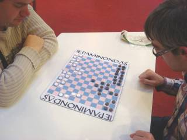

Revised: December 11, 2010
|
Epaminondas started out as a game of mine called “Crossings,” played on an 8 x 8 board. It was first described in Sid Sackson’s 1969 book A Gamut of Games (this is the same book that introduced Claude Soucie’s great game “Lines of Action”). After Sid’s book was published, I figured that I could add more complexity to Crossings if I went beyond the 8 x 8 board size, and I also might be able to turn it into an equipment board game. I settled on a 14 x 12 board, with the players seated at the long sides of the board. I chose this non-square board because it added more long diagonals, and battles along these diagonals bring more interest to the game. Actually, the game works on boards of many different sizes; so if you want to give the game a try, you can use whatever size board you happen to have. Since I had pretty much worked out a new game, I thought I should give it a new name, so I called it “Epaminondas.” This was a really stupid (and pretentious) move on my part and probably been a hindrance to the game. Epaminondas was the Theban general who made improvements to the phalanx formation and was able to defeat the Spartans. The only connection between the game and the general is that the game uses “phalanx” to describe the lines of pieces. If I had a chance to do this over, I would change all my nomenclature and would go back to calling the game “Crossings.” But it’s too late now, because the game has gone through three editions and has been written about in several articles and books. Epaminondas was first published in 1975 in a British edition by Philmar Ltd. A year later I published my own edition in America. I wrote an article about Epaminondas for the May 1975 issue of the British magazine Games & Puzzles. The article was called “Under the Strategy Tree.” I’ve copied it to my web site at this location. The article discusses my concept of “clarity,” and clarity is, I think, the best feature of Epaminondas. The complete rules to Epaminondas, as well as three puzzles based on the game, are in an article by Kerry Handscomb. The article was in Kerry’s brilliant (but small) magazine, Abstract Games (published in Vancouver, Canada) and also on the magazine’s web site. Unfortunately, brilliant (but small) games magazines have a tendency to disappear, and Abstract Games is now gone, along with its web site. I’ve seen this happen before (to World Game Review and twice to Games & Puzzles), so I had taken the precaution of downloading a copy of the article. It is now on my web site at this location. In the fall of 2005, Ludoteka.com added Epaminondas to their games you can play |
 |
Since the late 1970s, Epaminondas could not be found on the market, but recently (May of 2010), Nestorgames brought out a new edition. It is shown at the left. It’s a full-size board game, but it is actually portable. It collapses into a very small package that can easily be carried. Their web site has a video that shows how this works. Nestorgames is located in Spain and they only sell by mail-order. You might check out their web site to see the other games they publish. |
|
| |